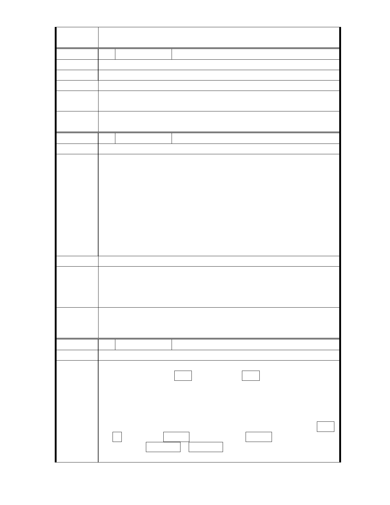

委
決
員
會
議
依專案小組結論辦理。
編 號 28 陳情人 林瑞淙等 3 人
建 議 位 置 士林區故宮路 48 巷 8 號
陳 情 理 由 因房屋老舊，改建後需三戶共用，不敷使用。
建 議 辦 法 本地區住2，請改回住3及住3-1。
專
結
案
小
組
論
相關建議錄請市府納入細部計畫參考。
委
決
員
會
議
依專案小組結論辦理。
編 號 29 陳情人 許博澄
建 議 位 置 士林區至善段六小段 279、209、169、119 地號等
本地區住 2，原為都市計畫住宅區，建物之建蔽率皆為 60％之五
樓建築，容積率 300％，拆除重建容積率只 120％，缺乏重建動機
破壞都市市容景觀，又屬故宮特區，影響更甚；又 119 地號等文
教區原容積率為 240％，而原屬行政區時之容積率為 400％，故 119
陳情理由
地號等之文教區在恢復為住宅區後，容積率亦應回復為原行政區
時 400％之容積率，改為住 4 之 1（容積率同為 400％），否則應提
升為第二種商業區，容積率 630％、建蔽率 65％，主要也是配合
對面文化創意產業用地的開發，需要增加此塊基地 0.412 公頃的使
用強度與容積率，以達相輔相成的使用效益，這塊地是故宮旁僅
存的一塊素地。
建議辦法
原國防管理學校旁變更文教區為住宅區建議予以通過，惟計畫書
專 案 小 組 中「土地多為私有」請再查核土地產權，另有關「本案回饋原則
結 論 應於細部計畫內另訂之」，有無需要回饋或如何回饋等則由都市發
展局於細部計畫內綜合考量。
委
決
員
會
議
原國防管理學校旁文教區變更為住宅區予以通過，有關使用強
度、使用項目、地區交通計畫、回饋原則與方式等則於細部計畫
中訂定。
編 號 30 陳情人 許博澄
建 議 位 置 士林區至善段六小段 279、209、169、119 地號等
100 年 9 月 16 日陳情建議內容
一. 故宮路東側現今住二用地→變更為住三用地。
理由：原住二老舊建築的實際容積率已達近 300%，現今房舍
老舊已達更新需求，但若更新容積率卻只有 120%，百姓財產
陳情理由
損失慘重，完全沒有更新動機，年代一久房屋更形老舊頹敗，
若長久無法更新影響故宮周邊景像、意像甚鉅！
二. 力行路東側與原國防管理學校間，約 0.412 公頃原保留文教
區→除變更為住宅區外，更應變更為商業區，或至少提高住宅
區等級為住三之二或住四之ㄧ；如此的容積率與使用強度，才
能與東面那片 5.7 公頃的文化創意產業園區(已由故宮規劃利
- 39 -